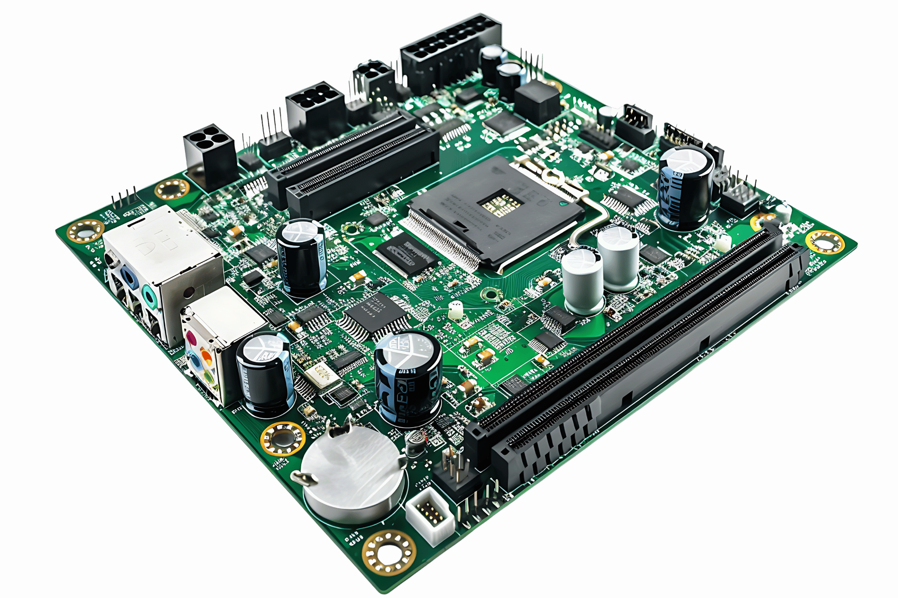

📚 Pengantar Sistem Komputer
Sistem komputer adalah gabungan terintegrasi dari hardware Perangkat fisik komputer yang dapat dilihat dan disentuh , software Program dan instruksi yang mengatur kerja hardware , dan brainware Manusia yang mengoperasikan, mengendalikan, dan mengembangkan sistem .
Ketiga komponen ini saling bergantung: hardware menjadi media fisik, software berperan sebagai pengatur dan penerjemah instruksi, sementara brainware menjadi pengendali utama yang menentukan tujuan dan cara pemanfaatan teknologi komputer.
Brainware
Manusia sebagai pengguna, perencana, pengembang, dan pemelihara sistem komputer.
Hardware
Perangkat fisik seperti CPU, RAM, perangkat input/output, dan media penyimpanan.
Software
Sistem operasi, aplikasi, dan utilitas yang menginstruksikan hardware untuk bekerja.
🏛️ Tiga Pilar Sistem Komputer
Berikut adalah tiga komponen utama yang Anda temukan pada hampir semua pembahasan sistem komputer : brainware, hardware, dan software.
Brainware: Manusia dalam Sistem Komputer
Brainware adalah semua orang yang terlibat dalam pemanfaatan sistem komputer, mulai dari pengguna biasa hingga perancang dan pemelihara sistem. Dijelaskan bahwa tanpa brainware, hardware dan software tidak akan memberikan manfaat.
Operator
Mengoperasikan aplikasi sehari-hari.
Operator
Menjalankan program/aplikasi untuk mengolah data, membuat dokumen, mengakses informasi, dan melakukan pekerjaan rutin.
Programmer
Membuat dan mengembangkan software.
Programmer / Developer
Merancang logika, menulis kode, dan menguji software sesuai kebutuhan pengguna atau organisasi.
Teknisi
Memelihara dan memperbaiki sistem.
Teknisi / Administrator
Memastikan perangkat keras dan jaringan berjalan dengan baik, melakukan perbaikan dan perawatan berkala.
Hardware: Perangkat Fisik Komputer
Hardware mencakup semua bagian fisik komputer : CPU, motherboard, RAM, media penyimpanan, serta perangkat input dan output.
CPU adalah otak komputer yang bertanggung jawab memproses instruksi dan data. Bagian CPU terdiri dari Control Unit, ALU, dan register.

Motherboard adalah papan sirkuit utama yang menghubungkan CPU, memori, penyimpanan, dan perangkat lainnya sehingga dapat saling berkomunikasi.
RAM adalah memori utama yang bersifat sementara (volatile). Menyimpan data dan instruksi yang sedang diproses CPU. Ketika komputer dimatikan, isi RAM akan hilang.

Media penyimpanan digunakan untuk menyimpan data dan program secara jangka panjang. Terbagi menjadi 2 media penyimpanan: primary storage dan secondary storage.
- Primary: RAM, ROM
- Secondary: HDD, SSD, USB flash drive, dll.
Software: Program dan Aplikasinya
Software adalah kumpulan program dan instruksi yang mengendalikan kerja hardware. Software dibagi menjadi sistem operasi, software aplikasi, dan software utilitas.
Sistem Operasi
Mengelola sumber daya hardware dan menyediakan antarmuka bagi pengguna: Windows, Linux, macOS, Android, iOS.
Software Aplikasi
Digunakan untuk tugas tertentu: pengolah kata, pengolah angka, desain grafis, browser, aplikasi komunikasi, dan lain-lain.
Software Utilitas
Membantu pemeliharaan dan keamanan sistem, seperti antivirus, program backup, dan pembersih file.
🧠 CPU dan Komponen Utama
CPU dijelaskan sebagai pusat pemrosesan yang memiliki tiga bagian utama: Control Unit, ALU, dan Register.
Control Unit (CU)
Mengatur alur instruksi dan mengontrol kerja bagian lain di dalam komputer dengan cara mengirimkan sinyal kendali.
Arithmetic Logic Unit (ALU)
Melakukan operasi aritmatika (penjumlahan, pengurangan, dsb.) dan logika (AND, OR, NOT, dan perbandingan).
Register
Tempat penyimpanan kecil berkecepatan tinggi di dalam CPU yang menampung data/instruksi sementara saat pemrosesan berlangsung.
⌨️🖨️ Perangkat Input, Output, dan Penyimpanan
Perangkat Input
Digunakan untuk memasukkan data dan perintah ke dalam komputer.
- Keyboard
- Mouse
- Scanner
- Webcam
- Microphone
Perangkat Output
Menampilkan hasil pemrosesan komputer kepada pengguna.
- Monitor
- Printer
- Speaker
- Projector
- Headphone
Penyimpanan Data
Tempat menyimpan data dan program.
- Primary Storage: RAM, ROM
- Secondary Storage: HDD, SSD, USB flash drive
💽 Software: Program dan Aplikasinya
Bagian ini mengulang dan menegaskan bab software , dengan pembagian jenis software dan contoh-contohnya.
Sistem Operasi
Mengelola sumber daya sistem dan menjadi perantara antara pengguna dengan hardware.
Software Aplikasi
Mendukung pekerjaan spesifik, misalnya pengolah kata, pengolah angka, desain grafis, dan lain-lain.
Utilitas
Menjaga kinerja dan keamanan: antivirus, disk cleaner, program backup, dan sebagainya.
🔄 Hubungan dan Ekosistem Sistem Komputer
“Brainware, hardware, dan software bekerja bersama membentuk ekosistem, seperti yang digambarkan dalam diagram berikut yang menunjukkan alur interaksinya.”
Klik setiap kotak pada diagram untuk melihat ringkasan perannya.
📝 Quiz Sistem Komputer
Jawab pertanyaan berikut untuk menguji pemahaman Anda terhadap materi Sistem Komputer.
✅ Kesimpulan
Dapat disimpulkan bahwa sistem komputer terdiri dari brainware, hardware, dan software yang saling terhubung. Brainware menentukan tujuan dan cara pemanfaatan teknologi, hardware menyediakan sarana fisik, sedangkan software mengatur dan menerjemahkan instruksi.
Pemahaman tentang masing-masing komponen (termasuk CPU, perangkat input/output, dan media penyimpanan) sangat penting agar komputer dapat dimanfaatkan secara optimal dalam belajar, bekerja, dan kehidupan sehari-hari.